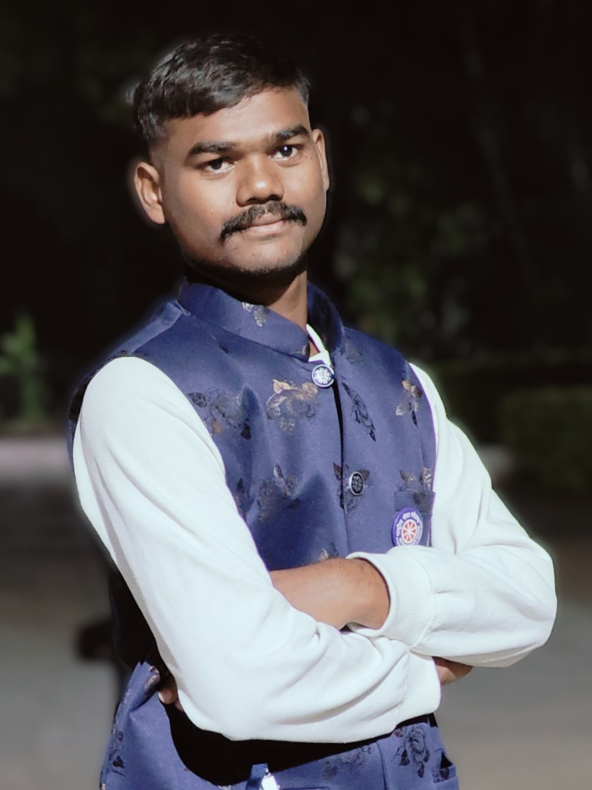

Hello! I'm Keerthipati Vamsi Krishna, a passionate full-stack web developer with expertise in both front-end and back-end technologies. With a focus on building responsive and dynamic websites, I thrive on creating intuitive and seamless user experiences.
My goal is to continuously improve my skills, learn new technologies, and provide valuable solutions to the digital world. I'm always up for a challenge and eager to work on innovative projects that push the boundaries of web development.
I am an active NSS volunteer, contributing to community service and development activities. I participated in various initiatives that involved promoting social awareness, environmental conservation, and assisting underprivileged communities.
Through NSS, I gained valuable leadership, teamwork, and problem-solving skills, while also making a positive impact on society.